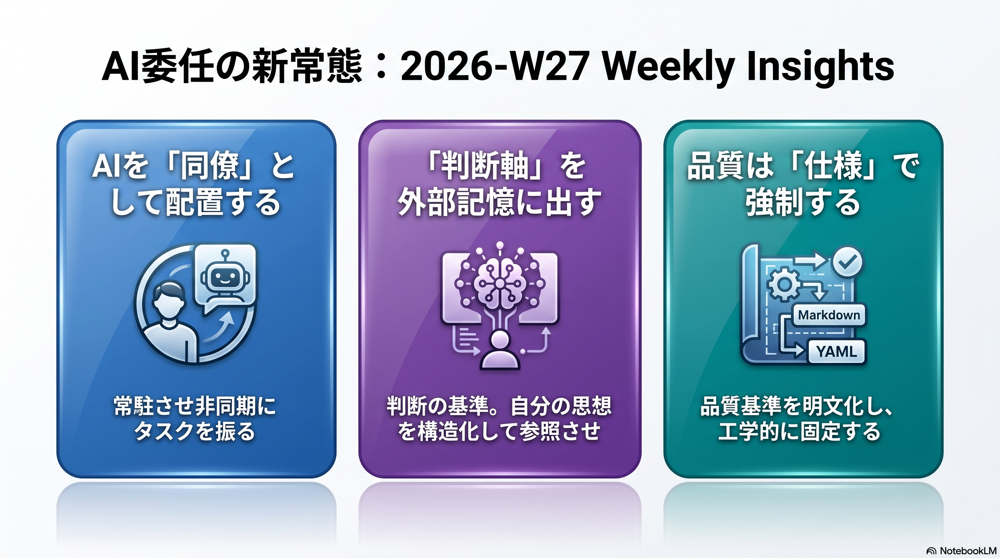
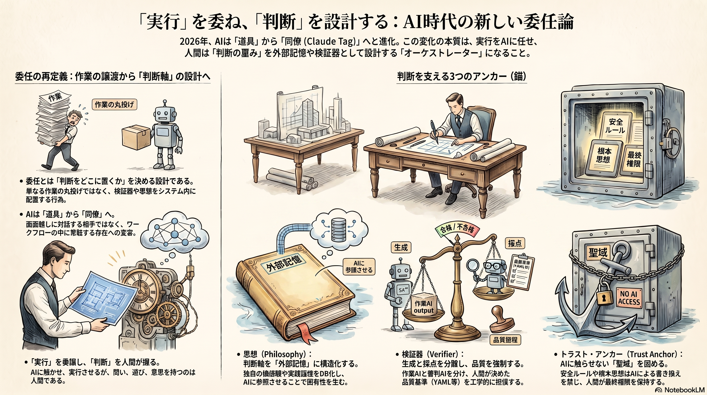

Weekly Insights: 2026-W27（2026-06-29〜07-05）
今週のホットトピック

- claude-tag AIが「呼び出す道具」から常駐する「同僚」へ — SlackにメンバーとしてClaudeを置き、メンションで非同期にタスクを委任する公式機能（@claudeai発・X bookmark 10,104）。
- philosophy-external-memory 委任の本体は「判断軸を外に出す」こと — フロントのAIは交換可能で、出力の固有性を生むのは外部記憶（思想）の深さ、というmasaki_lippleの主張（bm 3,824）。
- openmontage 出力のバラつきを「仕様」で固定する — AIコーディングアシスタント自身を司令塔にし、品質基準をYAML/Markdownに明文化して工学的に強制する動画制作OSS（X bookmark 4,938）。
深掘り
claude-tag AIを「相談先」から「同僚」へ
これまでのClaudeは人間が開いた画面で対話する相手だったが、Claude Tagはワークフローが流れるSlackチャンネルにClaudeを最初から常駐させ、人にタスクを振るのと同じメンションで非同期に委任する。効くのは委任UXの変化だけではなく、チャンネル単位・ツール単位でアクセスを絞る認可設計が製品レベルで前提に織り込まれている点だ。同じ「配置する」発想は、NotebookLMに役割と人格を仕込んで自律的に働かせる notebooklm-employees、創業者を個人コントリビューターからオーケストレーターへ移す founders-playbook にも共通する。AIが「使うもの」から「自分の場の中に居るもの」へ移った週。
philosophy-external-memory 渡しているのは作業ではなく判断軸
masaki_lippleは「書かせる（丸投げ）」と「任せる（権限委譲）」を分け、両者を分けるのは文体の模倣ではなく判断軸＝思想を外部記憶に構造化して置いたかどうかだと主張する（本人の体験談を含む単一ソース）。同じ「何を人間に残すか」の線引きが、検証器をワーカー自身に持たせない goal-loop-routine（自己採点するエージェントは落ちるテストを消して「完了」と言う）、安全ルールをAIに触らせない不可触領域（trust anchor）として固める makeloop にも現れる。実行は委任しても、判断（思想・検証器・ドグマ）は「どこに置くか」を人間が決める。
openmontage 品質は感性でなく工学で強制する
OpenMontageは「コードのオーケストレーターを置かず、AIアシスタント自身を司令塔にする」設計で、創造的判断・レビュー基準・品質基準をすべて可読なYAML/Markdownに出し、7次元のプロバイダー選定スコアリングとレンダー後の自己レビューゲートで品質をエンジニアリングとして強制する。「デザインのバラつき＝ガチャ」を色・余白・構図の仕様（.md）で抑える slide-md と同じ構えだ。出力の一貫性は感性ではなく明文化した仕様で担保する、という設計思想が今週は動画とスライドの両方で立ち上がった。
今週の中心テーマ
委任とは「タスクを渡す」ことではなく、実行を手放しつつ判断——検証器・trust anchor・思想——を「どこに置くか」を決める設計になった。

根拠ページ
- claude-tag（→ 今週のホットトピック#1）
- philosophy-external-memory（→ 今週のホットトピック#2）
- openmontage（→ 今週のホットトピック#3）
- notebooklm-employees — 知識＋人格＝自律的に働く従業員。「配置」クラスタのもう一つの代表（bm 7,532）
- founders-playbook — 創業者をオーケストレーター化するAnthropic公式プレイブック（Chat/Cowork/Code）
- goal-loop-routine — goal/loop/routineの3動詞分類。「検証器がゲーム全体」＝判断を残す論の核（bm 4,135）
- makeloop — 採否評価もAIに渡すが、trust anchorだけは人間に残す自己改善ループ
- oracle — 重い判断だけ別の上位AIに渡すセカンドオピニオン層（multi-modelパネル・bm 2,792）
- slide-md — デザイン一貫性を感性でなく仕様（.md3層）で固定するスライドシステム
- ai-native-cloud-selection — クラウド選定軸が「人間のGUI操作性」から「エージェントのCLI操作性」へ（Cloudflare）
既存wikiとの接続
- eval-loop — 生成→採点→閾値未満で止める品質ゲートの一般形。今週の検証器（goal-loop-routine）・AI評価パネル（makeloop）・レンダー後自己レビュー（openmontage）はいずれも「判断を残す＝採点をどこに置くか」のこの実装にあたる。
- agent-memory-layer — ユーザー所有の単一メモリ層を全エージェントの下に敷く設計。philosophy-external-memoryの「思想を外部記憶に出す」はこの記憶層に判断軸を載せた形。
- claude-projects-blueprint — Claude Projectsを「AI社員化」する6パート設計図。notebooklm-employeesの「知識＋人格」はプラットフォーム違いの同型パターン。
sugeta-san への問い
あなたのwiki運用（ingest・weekly生成・調査）で、いま「実行」と一緒にうっかり「判断」まで委ねてしまっている工程はどこか。
→ 今週のページが揃って示すのは、委任の品質は「何を渡すか」でなく「何を残すか」で決まること。たとえば ingest の検証ゲート（具体例/数字/出典/一文結論）は、生成したワーカー自身が自己採点する構造になっていないか。goal-loop-routineの「別モデルを審判に立てる」やmakeloopの「採否評価を別AIパネルに渡す」を当てると、自分のwikiでも検証器を生成器から分離する余地が見えてくる。
今週の小アクション（5分）
wiki-ingest の検証ゲートを1つ選び、「これは生成した本人が自己採点しているか、独立した目が採点しているか」を LESSONS.md に1行メモする。自己採点になっていれば「別観点で再採点する工程」を足す候補として記録する。
いますぐAIと一緒に（コピペ）
以下をそのまま Claude / Claude Code に貼って、今週の「判断をどこに置くか」を自分のwikiに当ててみてください。
このリポジトリの wiki-ingest スキル（.claude/skills/wiki-ingest/SKILL.md）と
その LESSONS.md を読み、ingest の品質検証ゲートを洗い出してください。そのうえで:
1. 各ゲートを「生成したワーカー自身が採点している / 独立した目が採点している」で分類
2. 自己採点になっているゲートを1つ選び、別観点（別モデル・別プロンプト）で
再採点する最小の工程を提案
3. その変更が "見た目は追加だが意味は検証の緩和" になっていないか自己点検
参照: wiki/concepts/goal-loop-routine.md, wiki/tools/makeloop.md
さらに読むべきページ
- loop-engineering — 今週の goal-loop-routine / makeloop の親概念。ループ設計の工学全体（4条件テスト・6構成要素・ハードストップ）を押さえると、3動詞と自己改善ループが1枚の地図に乗る。
- llm-council — oracleのmulti-modelパネル、makeloopのAI評価パネル、notebooklm-employeesの「会議」が共通して踏む「複数の目で盲点を炙る」パターンの親概念。
- self-improving-company — 委任の話を組織スケールに引き上げた構想（品質ゲート・学習層を会社の再帰ループに組み込む）。今週の「判断をどこに置くか」を会社設計で読む補助線。